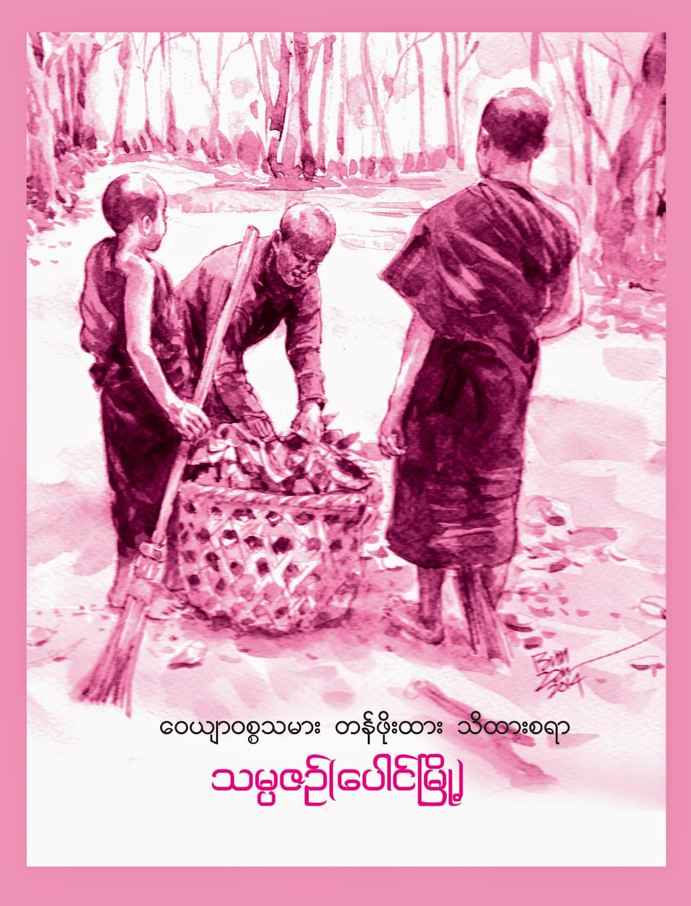

သင်ကြားပေးသည့်ဘာသာရပ်များ
ဤကျောင်းတိုက်တွင် သီတင်းသုံးနေထိုင်ကြကုန်သော ရဟန်းရှင်လူ ပြည်သူတို့အား ကျောင်းတော်မှ အောက်ပါ ပညာရပ်တို့ကို ဆည်းပူးသင်ယူလေ့လာနိုင်အောင် ဆောင်ရွက်ပေးပါသည်။
-
.jpeg) coding-camp
coding-camp
ခေတ်အခြေနေအလိုက် ယခုလို ITခေတ်ကြီးမှာ ခေတ်ရေစီးကြောင်းကို လိုက်နိုင်ဖို့ဆိုရင် မဖြစ်မနေ တတ်မြောက်ထားသင့်တဲ့ web-Developmentဆိုင်ရာ Codingများကို သင်ယူလေ့လာထားနိုင်မှ တော်ကာကြလိမ့်မည်။
-
ပါဠိစာပေများ
ဗုဒ္ဓဘာသာဝင်နှင့်တကွ ဘုရားရှင်ကိုယ်တော်မြတ် ဟောပြောပြသဆိုဆုံးမခဲ့မှုတို့ကို မိမိကိုယ်တိုင် ဘုရားရှင်ရှေ့မှောက် ရောက်ရှိနေသလိုမျိုး ခံစားမှုရနိုင်ဖို့ဆိုရင် ဘုရားရှင်နှင့် အနီးစပ်ဆုံးအရာက ပါဠိစာပေတွေကို သင်ယူသင်ကြားလေ့လာမှတ်သားမှ ဘုရားရှင်ရဲ့ စကားတော်မြတ်ကို ဆိုလိုရင်းအဓိပ္ပါယ်ကို သိနိုင်နားလည်နိုင်ပါလိမ့်မယ်။
-
 English စာပေများ
English စာပေများ
ယနေ့ခေတ်အခြေနေက သတင်းအချက်အလက်များ လူမှုဆက်ဆံရေးများ စီးပွားနယ်ပယ််များစသည်တို့အတွက် မသင်ယူမတတ်မြောက်ထားရင် ကိုယ့်လျှောက်လှမ်းမယ့်လမ်းကြောင်းမှာ ဆူးခလုတ်သစ်ငုတ်သဖွယ် ခံစားစေနိုင်တယ်၊ အများတကာနဲ့ ပြိုင်ပြေးရာမှာ မိမိက သူများတွေထဲ နှစ်ဆ သုံးဆလောက် အင်အားဝီရိယတွေ စိုက်ထုတ်နိုင်မှ သူများတကာရဲ့နောက် မကျန်ရစ်ဖြစ်လိမ့်မယ်။
-
 ဂဏန်းသင်္ချာတွက်ချက်များ
ဂဏန်းသင်္ချာတွက်ချက်များ
Engineerသမား programmerသမားစသည် လုပ်နိုင်ခွင့်ရှိမှ သင်ယူလေ့လာရမှာ မဟုတ် မိမိဘ၀အတွက် ဘယ်အခြေနေဖြစ်ဖြစ် ဘယ်နေရောက်ရောက် အတွက်အချက် ပေါင်း, နှုတ်, မြှောက်, စား(+, -, *, %/)ဆိုတာတွေကို တတ်မြောက်ထားသင့်ပါသည်၊ အတွက်အချက် မသိတတ်နားမလည်ရင် အသေးအမွှားကစ သူများရဲ့ လိမ်လည်လှည့်ဖြားမှုကို ခံရနိုင်တာမို့ မခံရအောင် သင်ယူလေ့လာလိုက်ကြစို့။
-
 မြန်မာစာပေများ
မြန်မာစာပေများ
အခြားနိုင်ငံရဲ့ ဘာသာစာပေ စကားတွေကို ဘယ်လောက်တတ်တတ် မိခင်ရဲ့ဘာသာစကား စာပေများကို တန်ဖိုးထားတတ်ရမယ်၊ တန်ဖိုးထား မြတ်နိုးနိုင်ဖို့အတွက် မိမိကိုယ်တိုင်က တတ်မြောက်အသုံးပြုတတ်မှ တန်ဖိုးဆိုတာ ရှိတာမို့ တန်ဖိုးရှိဖို့အတွက် တန်ဖိုးသိတတ်ဖို့က ပိုအရေးကြီးပါတယ်၊ တန်ဖိုးသိနားလည်ရင် တန်ဖိုးရှိတာပဲ၊ တန်ဖိုးရှိမှ မြတ်နိုးနိုင်တာမို့ တန်ဖိုးရှိတာတွေကို တန်ဖိုးသိတတ်ဖို့ လိုအပ်ပါတယ်။
-
 ယဥ်ကျေးမှုသင်တန်းများ
ယဥ်ကျေးမှုသင်တန်းများ
လူမျိုးဘာသာမရွေး ယဥ်ကျေးလိမ္မာစေရန် တစ်ယောက်တည်းနေ တစ်စိတ်တည်းထားတတ်ဖို့ အများနဲ့နေရင် အများနဲ့အတူ ဆက်ဆံရေးတွေ စုပေါင်းလုပ်ဆောင်မှုတွေ စုပေါင်းလုပ်ဆောင်မှုရဲ့အားအင်တွေ သိတတ် နားလည်တတ်အောင် ကလေးများအရွယ်အလိုက် အတန်းများခွဲကာ အတန်းကျောင်းပိတ်ရက်တွေမှာ ကလေးများအတွက် ယဥ်ကျေးမှုသင်တန်းတွေဆီ ခရီးဆက်ကြပါစို့။
အမြဲမပြတ်နေ့စဥ် လုပ်ဆောင်မှုများ
ဤကျောင်းတိုက်တွင် သီတင်းသုံးနေသမျှကာလပတ်လုံး ကျောင်းတိုက်တွင် မဖြစ်မနေ လုပ်ဆောင်ရမည့်အရာနှင့် လုပ်သင့်လုပ်ထိုက်သောအရာရယ်ဆိုတာ ရှိပါတယ်၊ မဖြစ်မနေ လုပ်ဆောင်ရမည့်အရာကိုတော့ မဖြစ်မနေအတိုင်း လုပ်ဆောင်နိုင်ရမည်။ လုပ်သင့်လုပ်ထိုက်သောအလုပ်ကား မိမိရဲ့ သဒ္ဓါတရားအပေါ်မူတည်၍လည်းကောင်း ကျန်းမာရေးစသော ကိစ္စရပ်များကြောင်းလည်းကောင်း အများလုပ်ဆောင်ချိန်မှာ အများနည်းတူ ပြုလုပ်နိုင်ရပါမည်။
-
ဆွမ်းခံဝတ်ပြုလုပ်ကြရခြင်း
သာသနာ့နွယ်ဝင် ဘုရားရှင်၏သားတော် သမီးတော်အဖြစ်နဲ့ ရှိနေသမျှကာလပတ်လုံး ဘုရားရှင်ကိုယ်တော်တိုင် သတ္တဝါများအပေါ် မေတ္တာကရုဏာထားကာ ဒါယကာ/ဒါယိကာမတို့၏ စေတနာသဒ္ဓါတရားကို ချီးမြှောက်သောအားဖြင့် ကျောင်းတော်သို့ လာမလှူနိုင်သော အလှူရှင်များ အာစိဏ္ဏကံကုသိုလ် တိုးပွါးပါစေရန် ဆွမ်းခံခြင်းအလုပ်ကို သပိတ်တစ်လုံးပိုက်ကာ မိမိ၏ ခြေသလုံးကို အားကိုးအားထားပြု၍ ဆွမ်းခံဝတ်ကို ပြုကြရပါသည်။
-
 စာပေများ သင်ယူကြရခြင်း
စာပေများ သင်ယူကြရခြင်း
သက်ရှင်နေသမျှ သင်ယူလေ့လာမှုမရှိတော့ရင် ဘဝသည်လည်းပဲ လျှောက်လှမ်းမယ့်လမ်းတွေမှာ အခက်အခဲများစွာ ကြုံလာနိုင်သမို့ ဖြေရှင်းဖို့ ကျော်လွှားဖို့ နည်းလမ်းပညာ ဆင်ခြင်စဥ်းစားတွေးခေါ်မှုအတွက် နည်းလမ်းဟောင်းတွေနဲ့ပဲ အခက်အဲတိုင်းကို ရင်ဆိုင်ဖြေရှင်းဖို့က မလွယ်ကူနိုင်တော့ပါ။ မလွယ်ကူသည့်ထက်လည်း ပိုခက်ခဲ့နိုင်ပါသည်။ ဒါကြောင့် သင်ယူလေ့လာမှုကို ဘယ်သောအခါမှ မရပ်တန့်လိုက်ပါနဲ့ သိပြီးသာ ဖြစ်ရင်တောင် ပိုမှတ်မိစေပါတယ်။
-
ပြန်လည်ပို့ချသင်ကြားပေးကြရခြင်း
မိမိသည် အတတ်ပညာ အသိပညာ ဘယ်လောက်ရှိရှိ ဘယ်လောက်တတ်တတ် အသုံးပြုမှုမရှိရင် တန်ဖိုးမရှိပါ၊ တန်ဖိုးရှိဖို့ဆိုတာ အသုံးချတတ်ဖို့ လိုအပ်ပါသည်၊ ဘယ်လို အသုံးချမလဲ ပညာသည် သုံးလို့ ကုန်တတ်သည်အရာ မဟုတ်တာကြောင့် မသိသေး မတတ်သေးသော အခြားသူတို့အား ဝေမျှပေးခြင်းဖြင့် မိမိသိထားတတ်ထားသည်ပညာသည် တန်ဖိုးရှိသထက်ရှိလာကာ များများအသုံးချနိုင်လေ တန်ဖိုးများလေးမို့။
-

ဝေယျာဝစ္စများ ပြုလုပ်ဆောင်ရွက်ကြရခြင်း
မိမိရဲ့ တစ်ကိုယ်ရေတစ်ကာယသည်လည်းကောင်း မိမိနေထိုင်သည် အိမ်ခန်းသည်လည်းကောင်း သန့်ရှင်းခြင်း၊ ပြုပြင်ထိန်းသိမ်းခြင်းမရှိရင် ကျန်းမာရေးစသည် အန္တရာယ်များကြုံရတတ်တာမို့ တစ်ယောက်တည်းနေရင် မိမိရဲ့ ဝေယျာဝစ္စကို လုပ်ဆောင်နေရသလို အများနှင့်နေထိုင်သည့်အခါ အများရဲ့ ဝေယျာဝစ္စကို လုပ်ဆောင်သင့်ပါသည်။ တစ်ယောက်နှင့်တစ်ယောက် ဝေယျာဝစ္စအပြန်အလှန်ပြုလုပ်ရမည်။
-
ဘုရားဝတ်ပြုကြရခြင်း
ဘာသာတိုင်းမှာ ဘုရားဝတ်ပြုခြင်းဆိုတာ တူကြပေမယ့် အဓိပ္ပါယ် အမူအရာ ရည်ရွယ်ချက်အားဖြင့်တော့ မတူညီနိုင်ကြပါ။ တူသည် မတူသည်ကို အဓိပ္ပါယ်ဖွင့်ဆိုခြင်းမဟုတ်ပါ၊ ကိုယ့်တန်ဖိုးထားသည့်အရာ တန်ဖိုးထားသည့်အလျောက် အရိုအသေလေးစားသမှု ပြုကြရတာမို့ ဘုရားရှင်ကိုယ်တော်မြတ်ကို ရိုသေလေးစားမှုထက်မကသော စိတ်ခံယူချက် ရည်ရွယ်ချက်ကိုယ်စီဖြင့် အသီးသီးဝတ်ပြုကြတာပါ။
စားဝတ်နေရေး ပြေလည်အောင် ဆောင်ရွက်ကြမှု
စားဝတ်နေရေးဆိုသည်မှာ သက်ရှိသူမှန်သမျှ ရဟန်းရှင်လူ မည်သူမဆို ရင်ဆိုင်ရတဲ့ကိစ္စတစ်ခုပါ။ တစ်ဦးနှင့်တစ်ဦး တစ်ယောက်နှင့်တစ်ယောက် ရင်ဆိုင်ရပုံချင်း ဖြေရှင်းရပုံချင်း မတူညီနိုင်ကြတာမို့ ကိုယ့်ရပ်တည်မှုအပေါ်မူတည်ကာ ရင်ဆိုင်ကြရသည်။
-
ဆွမ်းခံဝတ်ပြုလုပ်ကြရခြင်း
ဘုရားရှင်ကိုယ်တော်တိုင် သတ္တဝါများအပေါ် မေတ္တာကရုဏာထားကာ ဒါယကာ/ဒါယိကာမတို့၏ စေတနာသဒ္ဓါတရားကို ချီးမြှောက်သောအားဖြင့် လာမလှူနိုင်သော အလှူရှင်များ အာစိဏ္ဏကံကုသိုလ် တိုးပွါးစေရန် ဆွမ်းခံခြင်းအလုပ်ကို သပိတ်တစ်လုံးပိုက်ကာ မိမိ၏ ခြေသလုံးကို အားကိုး၍ ဆွမ်းခံဝတ်ကို ပြုကြရပါသည်။
-
ကပ္ပိယများရဲ့အပ်စပ်ချက်ပြုတ်မှု
ဘုရားသားတော်တွေမို့ အလှူရှင်များရဲ့ လှူဒါန်းမှုကိုသာ အားထားအားပြုကြရသည်၊ ဆွမ်းကပ်သောအလှူရှင်များ မရှိ၍လည်းကောင်း ဆွမ်းခံရာတွင် ဆွမ်းဟင်းအဆင်မပြေ၍လည်းကောင်း ကျောင်းတွင်းရှိ ကပ္ပိယကာရကတို့ ချက်ပြုတ်ဆက်ကပ်သည်ကိုသာ သုံးဆောင်ကြရပါသည်။
အောက်ပါ ပဒေသာပင်များကို ပါဝင်စိုက်ထူနိုင်ပါသည်
ပါ၀င်လှူဒါန်းလိုကြကုန်သော အလှူရှင်အပေါင်း သူတော်ကောင်းများ အထက်ဓာတ်ပုံတွင် ပါရှိသော QR-Codeကို scanဖတ်၍ မိမိတို့လှူဒါန်းစိုက်ထူလိုသော ပဒေသာပင်များ၏အမည်ကို Kpay Noteတွင် သတ်မှတ်ကာ လှူဒါန်းနိုင်ကြပါသည်။
ပညာရေးပဒေသာပင်
ဆွမ်းပဒေသာပင်
သင်္ကန်းပရိက္ခရာပဒေသာပင်
လျှပ်စစ်မီးပဒေသာပင်
ရေပဒေသာပင်
အဆောက်အဦးပြုပြင်ပဒေသာပင်
အားလုံးကိုယ့်စိတ်နှစ်ဖြာ ကျန်းမာချမ်းသာကြ၍ ဘေးဘယာတို့မှ ကင်းဝေးကြပါစေ